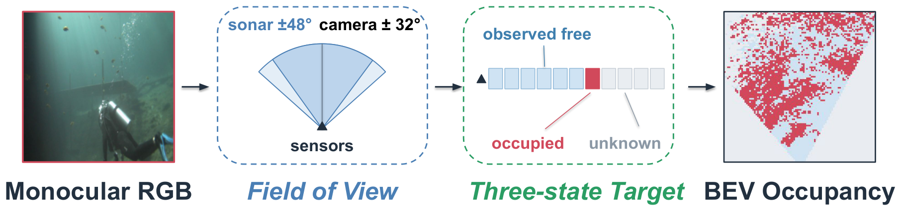
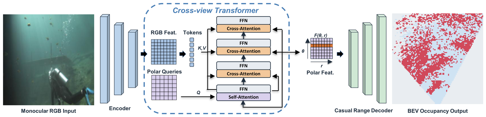
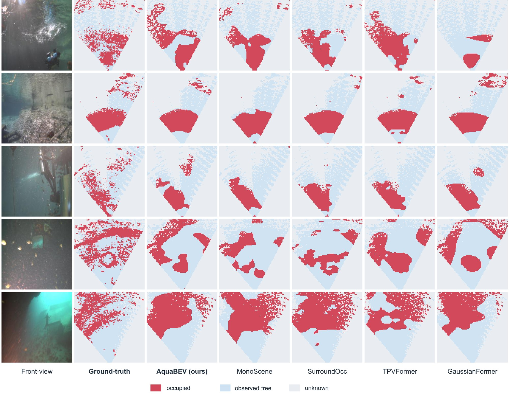
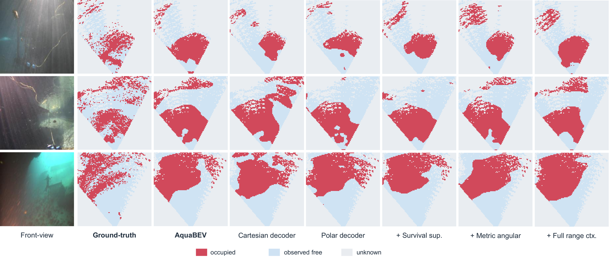
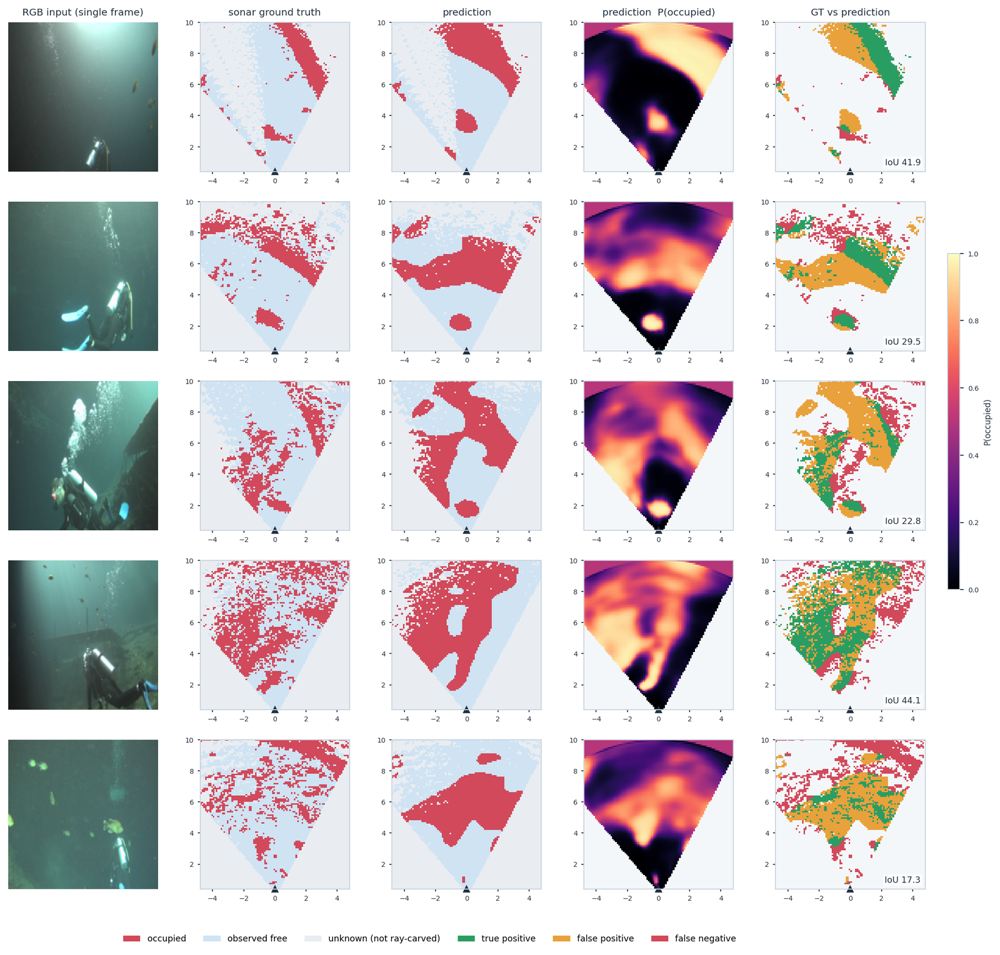

Trung Tien Dong
Trung Tien Dong
Abstract
Autonomous underwater robots are widely used for exploration, monitoring, and inspection, where safe navigation depends on understanding the surrounding free and occupied space. Bird's eye view (BEV) occupancy provides such a representation, but predicting it from a single underwater RGB image is difficult due to limited, unreliable geometric cues from appearance alone. 3D imaging sonar offers complementary geometric measurements to supervise this task.
We introduce AquaBEV, a monocular underwater occupancy model that predicts local BEV occupancy from a single RGB image, using paired 3D imaging sonar as geometric supervision during training. AquaBEV maps visual features into a calibration free polar representation and applies causal decoding along the range dimension before reconstructing the prediction in Cartesian BEV coordinates. A controlled underwater occupancy benchmark was established, adapting representative occupancy methods to the same RGB to sonar task under a unified protocol. AquaBEV achieves 31.4 Visible IoU and 38.6 Observed IoU, 4.0% and 4.3% relative improvements over the strongest transferred baseline.
Contributions
- New task & benchmark. We formulate monocular underwater BEV occupancy using 3D imaging sonar as training supervision and establish the first controlled benchmark for this setting, adapting representative occupancy methods (SurroundOcc, BEVFormer, VoxFormer, MonoScene, TPVFormer, OccFormer, GaussianFormer) under a unified training and evaluation protocol.
- AquaBEV. The first monocular BEV occupancy model designed for underwater perception. It uses a calibration-free polar representation with causal range decoding and outperforms the strongest transferred baseline by 4.0% in Visible IoU and 4.3% in Observed IoU.
Method

An image encoder extracts features that a calibration-free cross-view transformer gathers into a polar latent field indexed by azimuth and range, using learned polar queries. A causal range decoder then processes each ray from near to far without looking ahead — mirroring how an acoustic pulse propagates — before a differentiable warp reconstructs the prediction on a Cartesian BEV grid. Training supervises only the cells the sonar actually observed.
Results



BibTeX
@misc{dong2026aquabev,
title = {AquaBEV: Monocular Underwater BEV Occupancy with 3D Sonar Supervision},
author = {Trung Tien Dong and Shengji Jin and Chen Chen and Yi Sheng and Xiaomin Lin},
year = {2026},
eprint = {2609.04411},
archivePrefix = {arXiv},
primaryClass = {cs.RO},
url = {https://arxiv.org/abs/2609.04411}
}